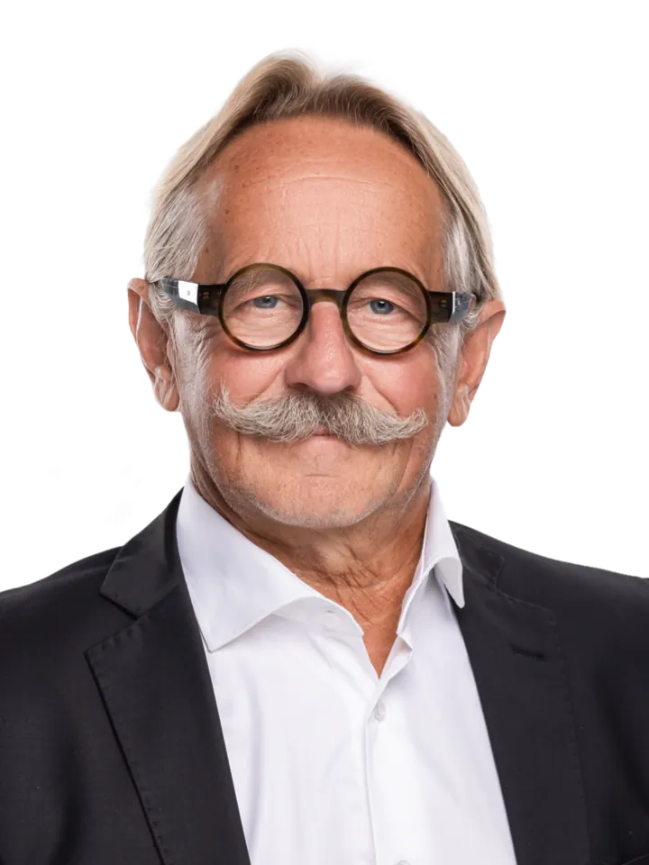
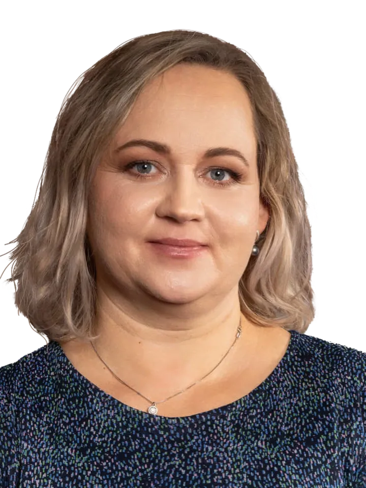
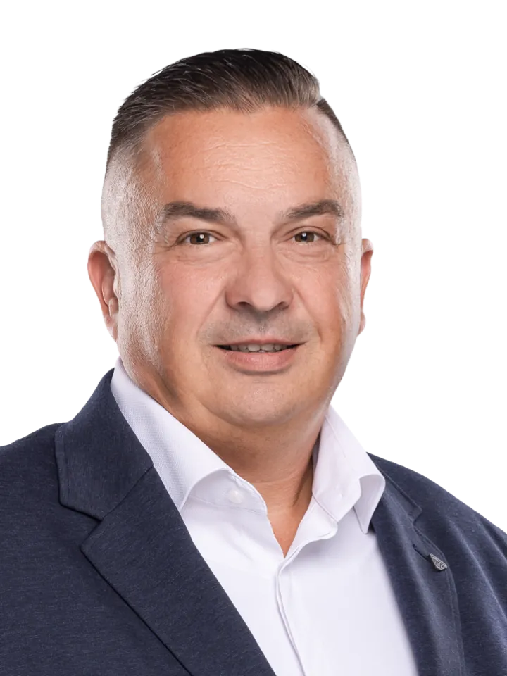
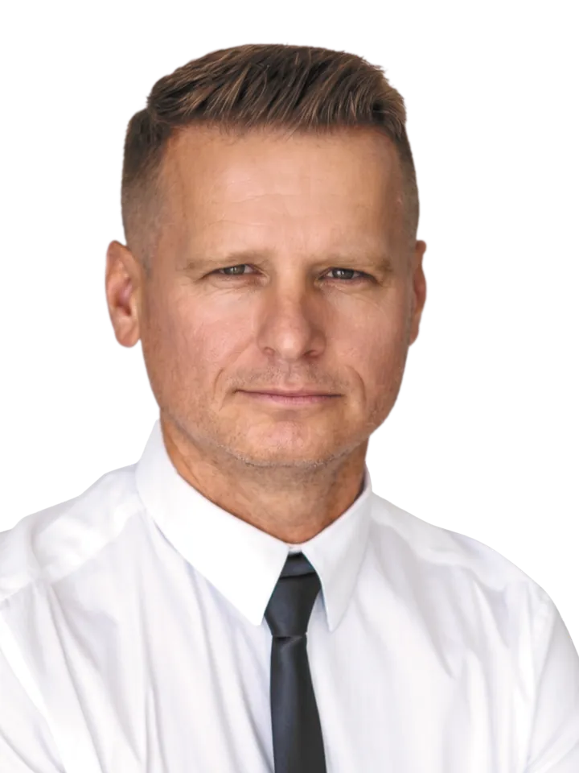
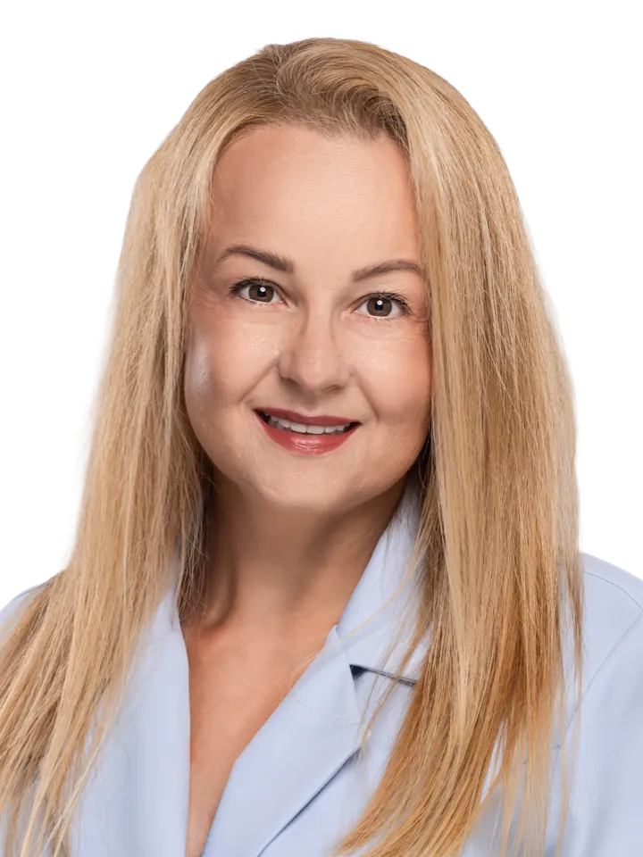
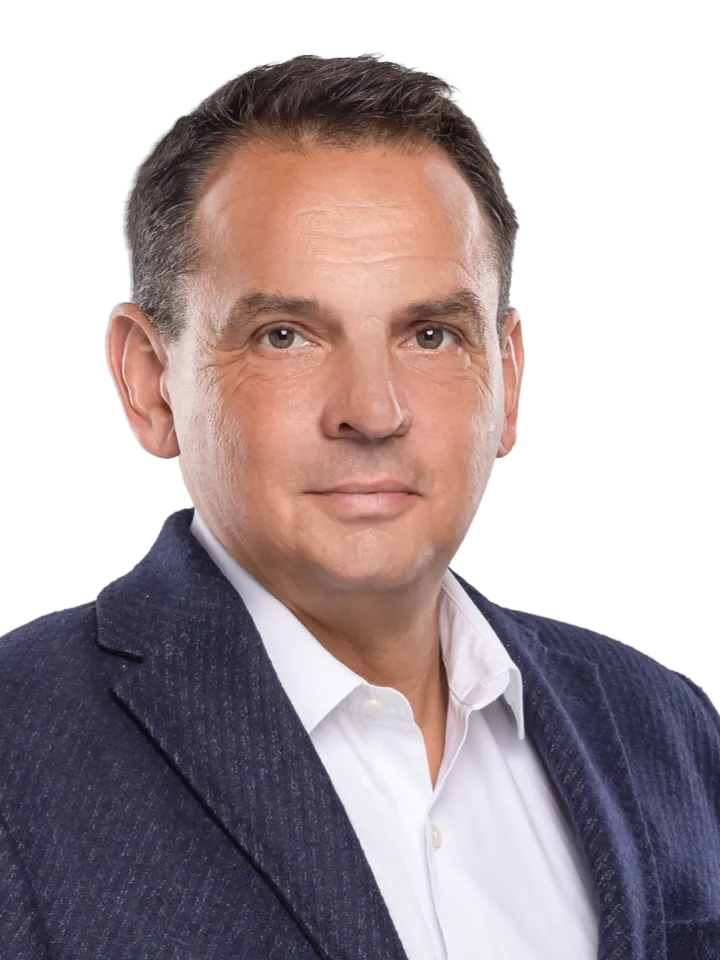
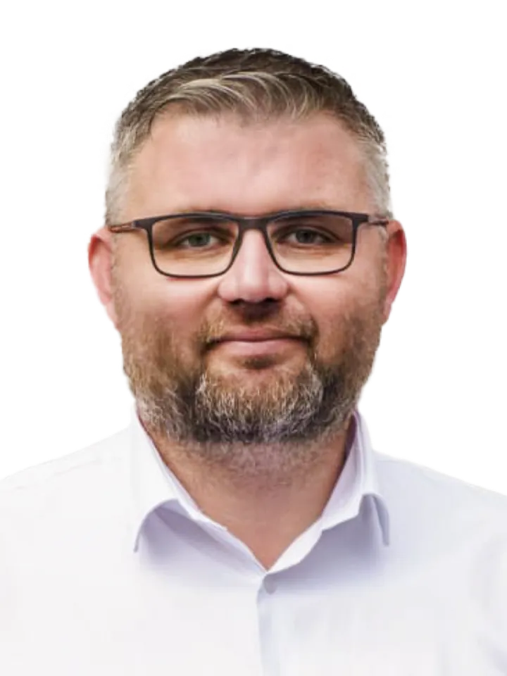
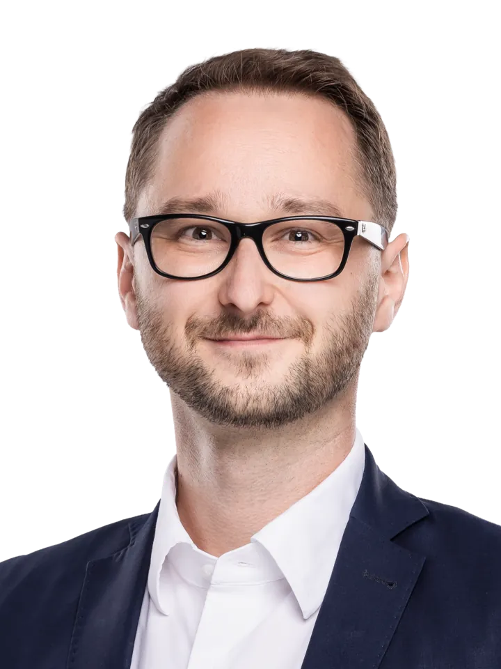

Ako starosta obce Horné Srnie vnímam, že rozvoj regiónu stojí na úzkej spolupráci obcí a kraja. V krajských voľbách máte v rukách možnosť zakrúžkovať až 9 kandidátov. Využite túto šancu naplno.
JurajHúserka

Ako starosta obce Horné Srnie vnímam, že rozvoj regiónu stojí na úzkej spolupráci obcí a kraja. V krajských voľbách máte v rukách možnosť zakrúžkovať až 9 kandidátov. Využite túto šancu naplno.
JurajHúserka

Keď spojím rolu mamy, knihovníčky a cukrárky, viem, že tie najlepšie veci potrebujú starostlivosť, skúsenosť a poctivé ingrediencie. Náš kraj si zaslúži dobré rozhodnutia postavené na pevných základoch.
MartinaBeňovičová

V politike sa riadim rozumom, ale aj svedomím. Verím, že verejný život potrebuje kultúru a ľudskosť. Využite každý svoj hlas a zvoľte si tím krajských poslancov, na ktorý sa môžete spoľahnúť.
ZuzanaMišáková

Som poslanec Trenčianskeho samosprávneho kraja a dôverne poznám, ako funguje krajská politika, a viem, že človek nemôže bojovať sám. Skutočné výsledky vznikajú len vtedy, keď ťaháme za jeden povraz.
TomášVaňo
Žijeme tu spolu a náš kraj má obrovský potenciál. Aby sa nám však zmeny podarilo presadiť, potrebujeme silný hlas v krajskom zastupiteľstve. S vašimi 9 krúžkami dokážeme jednoduchšie presadiť všetkých 9 priorít.
Dieram na cestách a zničeným nápravám na autách musí byť koniec. Naše krajské cesty II. a III. triedy spájajú vaše domovy s prácou a školami. Presadzujeme systematickú opravu cestnej siete, modernizáciu mostov a rýchlu zimnú údržbu.
Nemôže sa stať, že sa nedostanete do práce alebo dieťa z krúžku domov len preto, že neide žiadny autobus. Budeme presadzovať moderné, klimatizované autobusy, nízke ceny lístkov pre študentov a seniorov a nadväznosť spojov tak, aby ste nemuseli čakať desiatky minút na prestupoch.
Strach o zdravie blízkych je to najhoršie, čo človek zažíva. Budeme tlačiť na to, aby vo vašich mestách a obciach nebol problém nájsť obvodného lekára, tak, ako sa to podarilo Jurajovi Húserkovi v Hornom Srní.
Kultúra nie sú len budovy, sú to ľudia, tradície a podujatia, ktoré spájajú susedov a komunity. Budeme podporovať miestne domy kultúry, ochotnícke divadlá, remeselníkov a tradičné podujatia v mestách aj na dedinách.
Naši rodičia a starí rodičia budovali tento región a zaslúžia si úctu a špičkovú starostlivosť. Budeme presadzovať dostatok miest v domovoch sociálnych služieb, skracovanie čakacích lehôt a priamu finančnú podporu pre rodiny, ktoré sa o svojich príbuzných starajú doma.
Bicykel už nie je len hobby, pre mnohých z vás je to každodenný dopravný prostriedok do práce. Budeme pokračovať v budovaní Vážskej cyklomagistrály a nadväzujúcich cyklotrás.
Chceme, aby naše deti zostávali žiť a pracovať doma. Preto budeme investovať do stredných škôl a gymnázií, opravovať internáty a vybavovať učebne najnovšou technikou.
Podporíme starostov a primátorov získavať finančné zdroje na budovanie vodovodov, kanalizácií a na ochranu pred povodňami či suchom.
Šport musí byť dostupný pre každé dieťa a mladého človeka bez ohľadu na to, z akej rodiny pochádza. Zabezpečíme systémovú finančnú podporu pre mládežnícke športové kluby, obnovu školských ihrísk, telocviční a stavbu moderných workoutových či multifunkčných plôch v obciach.
V našej zostave nájdete starostu obce, dlhoročného poslanca, divadelníčku, právnika, sociálneho pracovníka, knihovníčku aj futbalistu. Je to pestrá zmes ľudí a rôznych odborností, vďaka ktorej si vieme navzájom pomôcť, poradiť a pozrieť sa na každý problém z viacerých strán. V kraji tak budete mať zastúpenie na naozaj každú oblasť života.

MartinBarčák
Nie som človek veľkých rečí a prázdnych sľubov, verím v poctivú prácu. Narodil som sa v Košiciach, no od detstva žijem v Trenčíne, dnes na Zámostí, a mesto poznám ulicu po ulici. Vo voľnom čase rád behám, pravidelne aj polmaratóny, a radosť čerpám v záhrade a pri gitare. Celý život som folklorista a teší ma, že túto vášeň zdedila aj moja vnučka, s ktorou trénujeme na husliach. Som hrdý manžel, otec a trojnásobný dedko.

MartinaBeňovičová
Pracujem ako detská knihovníčka a snažím sa u detí pestovať lásku ku knižkám namiesto sedenia pri mobiloch. Celý život žijem v našom kraji, narodila som sa v Trenčíne a vydala som sa do Stankoviec. Som hrdá mama troch detí a vo voľnom čase rada zájdem s naším buldočkom do prírody. Ako mama, knihovníčka a cukrárka viem, že všetko dobré si vyžaduje starostlivosť a poctivé ingrediencie. Presne tak chcem pristupovať aj k rozvoju nášho kraja.

ĽubomírHorný
Som riaditeľ a už 30 rokov pracujem v obchodnej sfére na manažérskych pozíciách. Vo voľnom čase sa venujem vedeniu futbalového športového klubu TFK Opatová, kde vychovávame mládež a spájame športovú komunitu ľudí. Kraj potrebuje skúsených ľudí, aby mohlo pokračovať v napredovaní a dokončení rozbehnutých projektov.

JurajHúserka
Ako starosta Horného Srnia sa každý deň stretávam s konkrétnymi problémami a potrebami ľudí. Som človek, ktorý hľadá spôsoby, nie dôvody, prečo sa veci nedajú. Od začiatku môjho pôsobenia v samospráve sa snažím ľudí spájať, hľadať spoločné riešenia a posúvať veci dopredu. Tento prístup chcem priniesť aj do nášho kraja a skúsenosti zo samosprávy využiť pri hľadaní riešení, ktoré budú zohľadňovať potreby obcí a miest. Vo voľnom čase trávim čas s rodinou a rád si idem zabehať do lesa.

ZuzanaMišáková
Pracujem ako riaditeľka Mestského divadla Trenčín, venujem sa aj vzdelávaniu, zlepšovaniu života komunít a charite. Chcem rozvíjať školskú, kultúrnu a športovú infraštruktúru, dostupnosť ihrísk a relaxačných zón, starostlivosť o deti, ako aj ľudský potenciál. Dôležité je pre mňa zdravé životné prostredie, čo nie je len zeleň, ale aj eliminácia sociálno-patologických javov. Politika potrebuje kultúrny prístup, nie nenávisť. Mojím krédom je spájať.

MartinSmolka
Viac ako 30 rokov pracujem v oblasti bezpečnosti a športu a týmto témam sa chcem venovať aj naďalej. Som predsedom komisie športu pri mestskom zastupiteľstve v Trenčíne a mám ambíciu ešte viac podporovať šport v kraji a modernizovať športovú infraštruktúru tak, ako sa nám darilo aj po minulé roky.
RóbertŠvehla
Na vlastnej koži som videl, ako fungujú mestá v zahraničí a ich sociálna politika. Tieto skúsenosti chcem preniesť do mesta aj kraja. Vyrastal som v Spojených štátoch, vysokú školu som študoval v Kanade a vo Švédsku, a to aj vďaka úspešnej hokejovej kariére môjho otca. V Kanade som absolvoval bakalárske štúdium s dvojodborom politológia a história. Mojou doménou je sociálna politika, ktorej sa v Trenčíne venujem už v súčasnosti.

TomášVaňo
Viac ako 20 rokov som sa venoval rozvoju futbalu v Záblatí, kde sa nám z malého dedinského klubu podarilo vybudovať rešpektovanú organizáciu s desiatkami mladých talentov a skvelým zázemím. Popri tom je mojou srdcovkou dychová hudba Textilanka, v ktorej pôsobím ako spevák a prinášam ľuďom radosť z poctivej slovenskej muziky. Som hrdý otec a človek, pre ktorého sú skúsenosti, odhodlanie a práca pre ľudí na prvom mieste.

PatrikŽák
Navštevoval som francúzske bilingválne Gymnázium Ľ. Štúra v Trenčíne a neskôr študoval na City University of Seattle. Pracoval som v rodinnej firme aj v medzinárodných spoločnostiach v IT. Od roku 2010 som poslancom za mestskú časť Juh a od roku 2017 zástupcom primátora. Venujem sa práci s ľuďmi a občianskymi združeniami, projektu Európske hlavné mesto kultúry, propagácii mesta a mobilite. Doma ma čakajú manželka, dve malé deti a kocúr.
Zlatovská aj Záblatská kyselka sú výborné miesta na príjemnú prechádzku, relax či opekačku. Červená trasa od kyselky vedie lesom na lúky nad Záblatím, kde nájdete parádnu hojdačku a krásny výhľad na celý Trenčín.
Múzeum Príbeh štyroch obcí v Trenčianskych Stankovciach ukazuje históriu spojených dedín Rozvádz, Sedličná, Malé a Veľké Stankovce. Nájdete tu vzácne archeologické nálezy, tradičné kroje a krásne historické fotografie.
Víkendové zápasy v Opatovej, Záblatí či Trenčianskej Turnej ponúkajú parádnu atmosféru. Príďte podporiť lokálne kluby, trénerov a decká, vyvetrať si hlavu, dať si dobré občerstvenie a zažiť čistú radosť zo športu.
Ranch 13 a Antonstál ponúkajú príjemnú kombináciu na rodinný výlet. Na Ranchi 13 si užijete kone a atmosféru divokého západu. Odtiaľ môžete pokračovať krásnou prírodou Bielych Karpát až k historickému kaštieľu Antonstál, kde si vychutnáte pokoj a čaro tohto výnimočného miesta.
Príďte sa zabaviť do KKC Hviezda v Trenčíne na čiernu komédiu Zázrak. Dej vás prenesie do Francúzska roku 1250 do chudobného kláštora. Čaká vás kolotoč bláznivých situácií, skvelého humoru a večer plný divadelnej energie.
Ak máte radi cyklistiku, medzinárodná cyklotrasa Trenčín – Nemšová – Brumov je pre vás stvorená. Celý úsek má hladký asfaltový povrch, je oddelený od premávky a vedie krásnou prírodou Považianky a Vlárskeho priesmyku.
Zmodernizovaná historická sýpka v Moravskom Lieskovom ponúka tvorivé workshopy, lokálne trhy aj podujatia. Vychutnajte si skvelú kávu v kaviarni alebo si oddýchnite v slivkovom sade v srdci krásnej prírody.
Kykula ponúka dokonalý únik do krásnej prírody Bielych Karpát. Čakajú vás tu hlboké lesy, nádherné výhľady na okolitú krajinu a božský pokoj. Ideálne miesto na načerpanie novej energie a oddych od mestského ruchu.
Obnovený Župný dom v Trenčíne ožil vďaka projektu EHMK 2026. Zrekonštruovaná historická pamiatka prináša moderný priestor pre koncerty, výstavy aj komunitné stretnutia v srdci kraja. Spojenie histórie a kultúry nadchne každého.